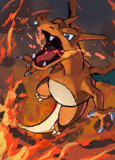
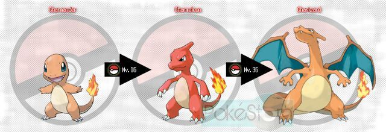
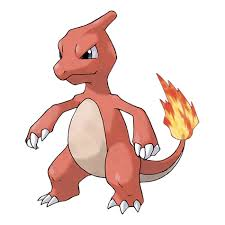
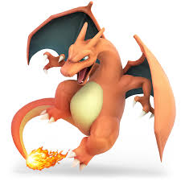
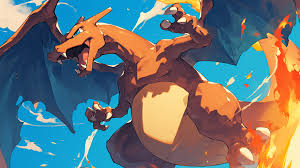
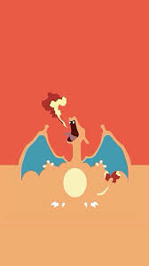
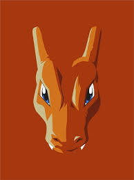
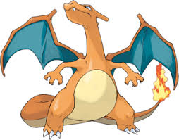

*Pokedex - Charizard*

*CARACTERISTICAS*
Ao contrário de suas pré-evoluções, tem asas que lhe permite voar, é um pokemon muito parecido
com um dragão. Como suas formas anteriores, é bípede e tem uma longa cauda com
uma chama que só se apaga quando ele morre. Tem três garras extremamente afiadas,
dígitos distintos, um longo pescoço, e dois chifres salientes na parte de trás de sua cabeça.

*LINHA EVOLUTIVA*
Charmander:

Tipo: Fogo💥
Número na Pokédex: #004
Charmander é um Pokémon de fogo com aparência de um pequeno lagarto. Ele possui uma chama na ponta da cauda,
que é um sinal de sua saúde e força. Quando Charmander está forte e saudável, a chama é grande e brilhante;
quando está fraco ou doente, a chama diminui.
Charmeleon:

Tipo: Fogo💥
Número na Pokédex: #005
Charmander evolui para Charmeleon no nível 16. Charmeleon tem uma aparência um pouco mais agressiva, com um corpo
mais robusto e uma cauda com uma chama mais intensa. Ele se torna mais rápido e ágil, e sua habilidade em combate
aumenta. Charmeleon é conhecido por sua natureza temperamental e seu desejo de lutar.
Charizard:

Tipo: Fogo💥/Voar💨
Número na Pokédex: #006
Charmeleon evolui para Charizard no nível 36. Charizard é um dragão imponente com grandes asas e uma habilidade de voo.
Ele combina o tipo Fogo com o tipo Voar, e sua chama se torna ainda mais poderosa. Charizard pode lançar ataques de fogo
devastadores e é conhecido por sua força e habilidade em combate aéreo.
Mega Charizard X:
.jpeg)
Adquire o tipo Dragão e ganha uma aparência mais robusta e escura.
Mega Charizard Y:
.jpeg)
Mantém o tipo Fogo/Voar, mas recebe uma nova aparência mais aerodinâmica e intensa.
*CURIOSIDADES*

-Geralmente, um Charizard é competitivo.Ele adora a batalha e gasta uma grande quantidade de tempo de formação ou olhando adversários.
Seu espírito competitivo também é notável, uma vez que nunca vai cuspir fogo em um inimigo mais fraco a menos que provocado ou ordenado.
Quando fica muito irritado, as chamas em sua cauda se tornar uma cor branco-azulada. Ele cospe fogo que é quente o suficiente para derreter
rochas. é conhecido também por incendios floestais causados por sua fúria.

-Seu fogo é quente o suficiente para derreter rochas. Quando nervoso, a chama em sua cauda queimará intensamente. É orgulhoso e voa pelos céus em
busca de adversários poderosos.

-Em Pokémon Red e Blue (ou Green) e Pokémon FireRed e LeafGreen, Charizard, sendo a forma evoluída final de Charmander, só aparece se você escolher o mesmo
como seu Pokémon inicial, nas outras versões há vários meios diferentes de obtê-lo, seja com cheats (códigos) ou após derrotar a Elite Quatro.

-Quando Mega Evolui para Mega Charizard X ele se torna do tipo Fogo e Dragão, enquato quando Evolui para Mega Charizard Y ele continua sendo do tipo Fogo e Voador.